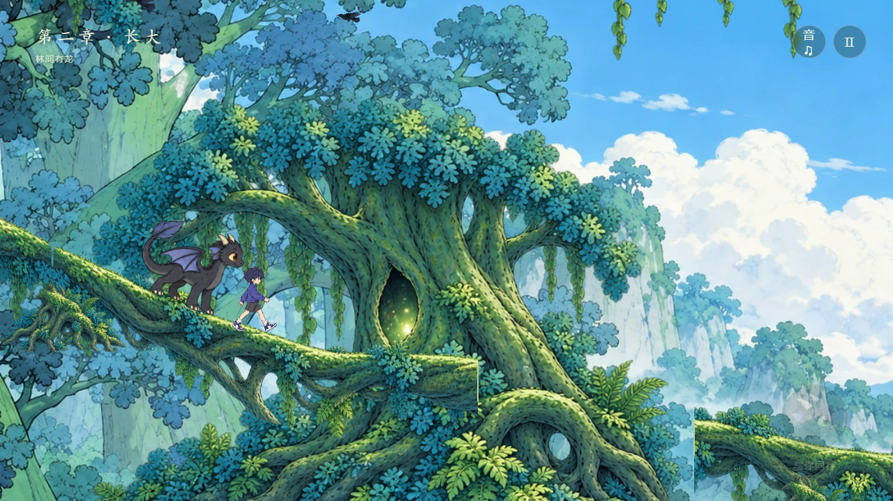
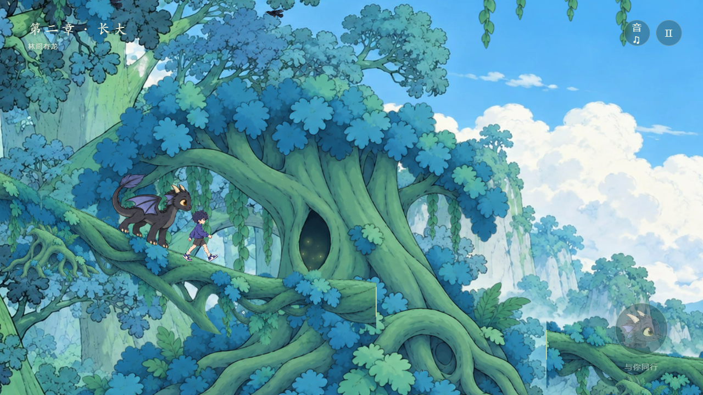
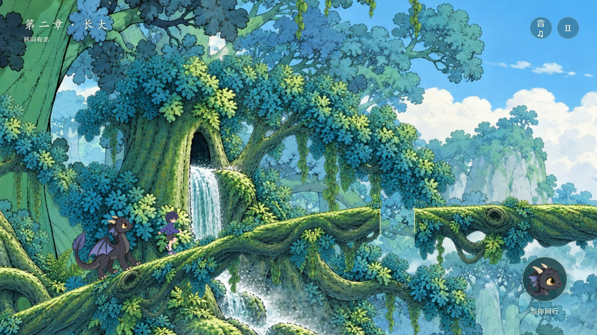
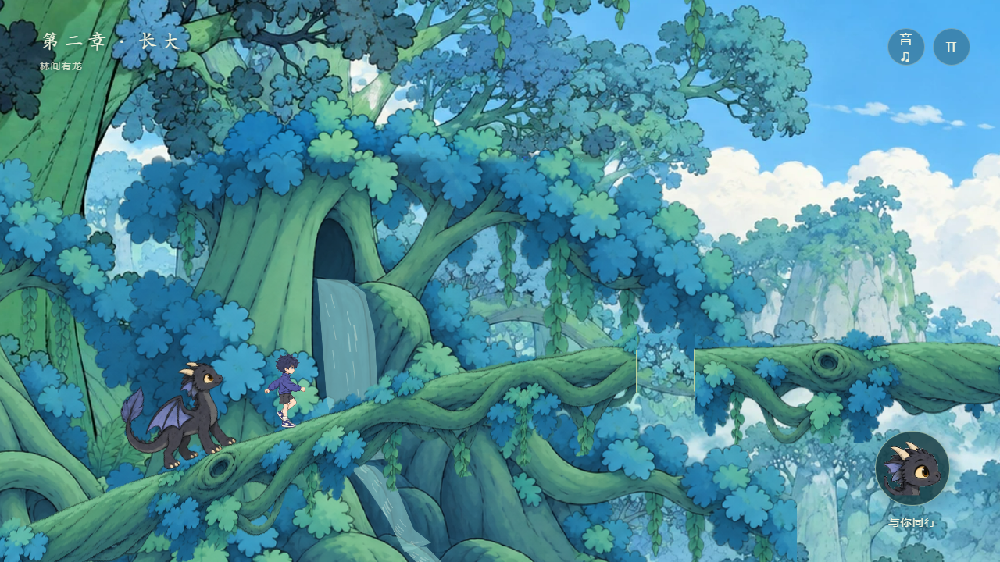

<!doctype html><meta charset="utf-8"><title>局部光与流水 · 修改前后</title><style>body{margin:0;padding:28px;background:#193d43;color:#e6efdf;font:17px system-ui}main{max-width:1400px;margin:auto}a{color:#c8dfb5}.pair{display:grid;grid-template-columns:1fr 1fr;gap:16px}figure{margin:0}img,video{width:100%;border-radius:7px}figcaption{padding:10px 0}section{margin:30px 0}@media(max-width:700px){.pair{grid-template-columns:1fr}}</style><main><h1>环境局部更新</h1><a href="./">返回游戏</a><section><h2>相同位置 · 树洞与画风</h2><div class="pair"><figure><figcaption>修改前</figcaption></figure><figure><figcaption>修改后</figcaption></figure></div></section><section><h2>相同位置 · 瀑布与树冠</h2><div class="pair"><figure><figcaption>修改前</figcaption></figure><figure><figcaption>修改后</figcaption></figure></div></section><section><h2>动态检查录屏</h2><p>前12秒：错相微光。后12秒：连续流水。镜头固定以便检查树干与边缘是否保持静止。</p><video controls playsinline src="review-v6/water-loop.webm"></video></section></main>
